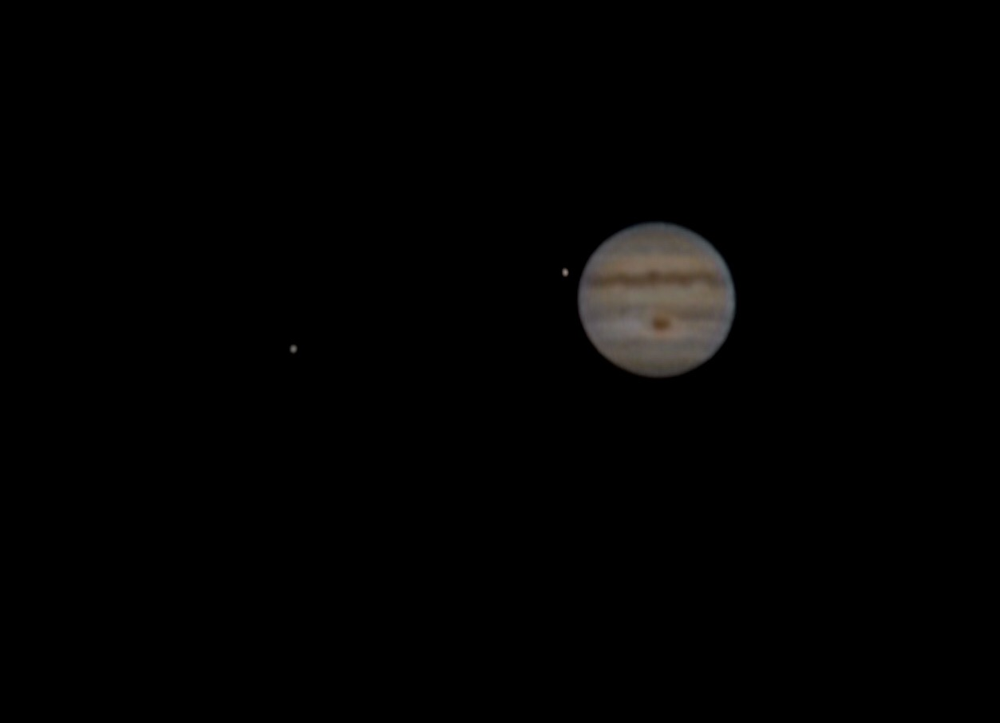
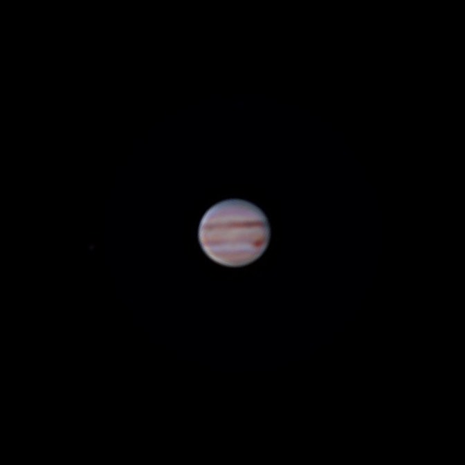
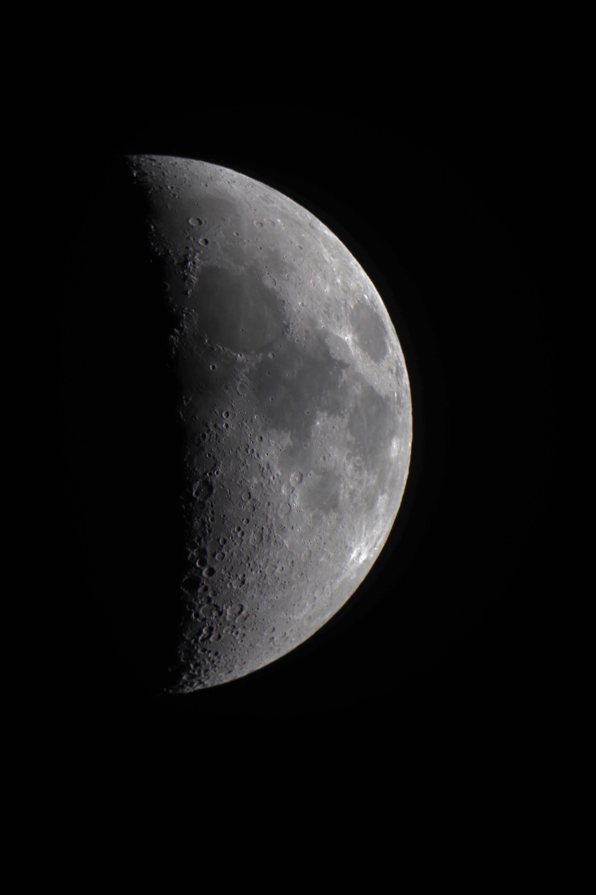

Alex Koenig
hello!
I began my astrophotography journey in 2013, shortly after I saved up to buy my first "real" telescope, a beloved Apertura AD8. For many years I stuck to planetary photography since it provided a superb technical challenge while still being feasible with my equipment and the level of light pollution in my area. Over time I've branched out to deep-sky object astrophotography as I've gained experience and acquired/built more interesting equipment. I have compiled a small collection of my work on this page.

Andromeda, Summer 2019, taken while visiting the 4.2-meter Discovery Channel Telescope at Lowell Observatory. 4 x 5 minute exposures stacked in DSS w/ dark and bias frames. Post-processing in Lightroom. Equipment: Canon T7i; Canon EF 100-400mm f/4.5-5.6L IS II USM Lens; iOptron SkyTracker Pro.

Saturn, Spring 2020. I minimized the effects of atmospheric turbulence by using speckle imaging and selecting the 500 highest-quality frames out of 5000 total. Stacked with PIPP and AutoStakkert 2. Equipment: Canon T7i; Apertura AD8; Orion 2x Barlow.

Jupiter with two of its moons, Io (inner) and Ganymede (outer), Summer 2018. Speckle imaging; best 10% of 2500 frames. Stacked with PIPP and AutoStakkert 2. Equipment: iPhone 5s; Apertura AD8; Orion 2x Barlow.

Jupiter, Spring 2020. Speckle imaging; best 20% of 3000 frames. Stacked with PIPP and AutoStakkert 2. Equipment: Canon T7i; Apertura AD8; Orion 2x Barlow.

First light for my homemade 12.5" newtonian telescope, Spring 2019. Single frame, no processing. Equipment: Canon T7i; homemade 12.5" newtonian scope.